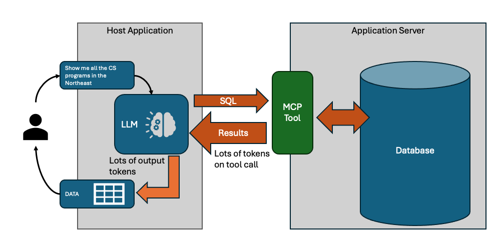

Why Your LLM Can't Be Your Reporting Layer
Part 1 of "Scaling LLM-Based Reporting Past the Demo"
November 16th, 2025
TLDR
LLMs excel at translating natural language into database queries but fail when you push large result sets through their context window. The solution: dual response. Return a sample (10-50 rows) for the LLM to validate its work, plus a resource link for your app to fetch complete results out-of-band.
So you've hooked an LLM up to your database and asked it to "show me all customers in California." Works great in the demo - clean results, natural language interface, everyone's impressed. Then you try it with real data and watch your context window explode, your API costs spike, and your responses slow to a crawl.
This is the wall that every LLM-based reporting project hits.
Solution - Dual Response
Before we dig into why this happens, here's the solution: don't make the LLM responsible for delivering results - just for generating the query.
Every query tool returns two things:
- A sample (10-50 rows) - enough for the LLM to validate its work
- A resource link - a handle the app uses to fetch the full dataset
The LLM sees the sample, confirms the query looks right, and tells the user "Found 847 customers matching your criteria." Your app fetches all 847 rows through the resource link and renders a proper table. The LLM never touches those 847 rows.
Here's what's interesting: if you're building with the Model Context Protocol, the mechanism for this already exists. MCP's resource_link content type - introduced in the 2025-06-18 spec - lets tools return URI references that clients can fetch out-of-band. It's designed exactly for this scenario, but I've seen remarkably few implementations actually use it for reporting. Most developers either don't know it exists or aren't sure how to structure their tools around it.
That's the gap this series fills. We're not inventing new protocol features - we're using MCP's existing primitives in a coordinated pattern optimized for large dataset reporting.
The rest of this post series explains why this pattern is necessary - and why simpler approaches fail.
Why LLMs are good for reporting tools
Consider a dataset like IPEDS - the federal database of U.S. colleges and universities that we'll use as a running example. You've got thousands of institutions, each with hundreds of attributes: state, control type (public/private), Carnegie classification, program offerings, enrollment figures across a decade. Users want to search by any combination - "private research universities in the Northeast with growing computer science programs."
Traditional UI approaches force a bad choice. If you keep it simple with a few dropdowns, and power users will get frustrated because it's not expressive enough. If you grow the UI, you'll have dozens controls that intimidate most users while still missing edge cases.
Obviously there's a ton we can do on UX to design elegant interfaces that deliver a combination of simplicity and expressiveness, but it's a lot of work. SQL is genuinely the right tool for this kind of query. But your users aren't programmers. As a field, we've been chasing natural language query for decades because of this problem.
LLMs change the equation. They're a real-time programmer on call - translating "show me nursing programs at public universities in California" into the exact query needed. No rigid UI, no SQL knowledge required.
That's why LLMs are the natural fit for reporting - end users can query data without SQL, and we don't need sophisticated UX design.
Two Different Jobs
There's a problem though. When you are using an LLM to query data, you are asking it to do two fundamentally different things with data, and one of them breaks at scale.
-
Analysis tasks need the LLM to compute an answer. "What's the average CS enrollment at Ivy League schools?" - that's 8 schools, maybe 5 columns, 40 data points. The LLM needs to see this data to do the math. The LLM is awesome at pulling the data it needs, synthesizing the result, and reporting it back to you. It's giving you an answer to a specific question.
-
Retrieval tasks need the LLM to generate a query, but the user needs the results. "Show me all institutions with computer science programs" - that's 2,400+ schools. The LLM's job is translating "computer science" into CIP code 11.0701 and building the query. It doesn't need 2,400 rows to do that.
Turns out that actually a lot of reporting requests are retrieval, and retrieval is where context windows become a problem.
The Math That Kills Your Demo
Let's continue with our example of a database of colleges and universities - IPEDS. It's the canonical source for institutional data: enrollments, completions, finances, admissions, you name it (at least it was...).
- ~6,000 institutions
- ~2,000 CIP codes (the Classification of Instructional Programs - the taxonomy for academic programs, where 11.0701 is "Computer Science" and 51.3801 is "Registered Nursing")
- 10+ years of completion data
- Each institution has 100+ metadata fields
Enrollment management teams use this type of data to benchmark against peer institutions. Marketing needs competitive analysis for program launches. Academic administrators track trends to justify new programs or sunset declining ones. Everyone needs slightly different slices, filtered and grouped in ways unique for their needs. There are plenty of reporting tools and integrations that expose the IPEDS dataset to higher ed in easier ways.
When using an LLM, the problem starts when you get the following query:
"Show me nursing program enrollment trends across public universities in the Southeast" could return 50,000+ rows. Each row might be 50-100 tokens with field names and values. You're looking at millions of tokens for a single query result.
Context windows are finite. Even with 128K or 200K token models, you're burning through budget fast. Worse, attention mechanisms have quadratic complexity - costs scale with the square of context length. Research shows LLMs exhibit "lost in the middle" degradation: accuracy drops for information buried in long contexts.
The key insight is that in this type of reporting task, you are really looking for the LLM to generate a query, not look at the results. Traditional MCP tools return results to the LLM though, and then the LLM needs to include the results in it's own output. You are paying for the output tokens, and the tool-call tokens are slowing down LLM request/response substantially.

Why not just ask the LLM for the SQL?
The obvious solution is to tell the LLM about the schema, and ask it to give you SQL (or whatever query language you need). Your application can use the SQL to query the data itself. This is where most reporting tool projects go to, pretty quickly.
The problem is that studies show 15-20% error rates even on well-structured text-to-SQL benchmarks. In practice, LLMs need to see output to catch mistakes - wrong joins, missing filters, unexpected nulls. An LLM might generate a query for "computer science programs" that accidentally includes certificate programs when you wanted bachelor's degrees. It needs to see sample output to catch that.
This is really bad news, because it means that in order for the LLM to really do well it does need to see results - the "one shot" SQL generation just fails too many times. It's doubly bad news because that iteration means you are paying (time and money) for token exchanges in and out of tool calls repeatedly, while the LLM refines it's query.
The dual-response strategy solves this problem - partial preview results are returned by the MCP tool, along with a reference to the full dataset. The LLM gets 10-15 representative rows - enough to validate columns, spot data issues, and refine. When the query is finally correct, the full results flow through the resource link, never touching the context window.
Side note on tool design
Before going much further - exposing MCP tools that allow an LLM to specify an SQL (or other query) directly isn't always the right answer. With most databases, you can limit SQL to read-only on a connection basis, and you can use row-level security to go further and make sure the LLM isn't generating queries that violate user access rules. It can be done well, but sometimes you prefer to provide api-like tools - perhaps your application already has them.
API-style tools have structured parameters:
search_institutions({ state: "NJ", control: "public" })SQL-style tools let the LLM write queries directly:
query("SELECT * FROM institutions WHERE state = 'NJ'")Sometimes its easier for LLMs to get api-style tool calls right, even though SQL-style is more flexible. Either way though, everything we are talking about here still holds. If your MCP tool call is going to return lots of data, you should consider dual-response, and allow the LLM to preview results and defer full result exchange to the host application.
Why Dual Response Works
Here's an example of the result of a dual-response MCP tool call returning institutions based on some sort of query:
{
results: [...], // 10-15 sample rows
resource: {
uri: "resource://abc123",
name: "Institution Search Results",
mimeType: "application/json"
},
metadata: {
total_count: 847,
columns: ["name", "state", "enrollment", ...],
expires_at: "2025-01-15T10:30:00Z"
}
}The resource object maps directly to MCP's resource_link content type. Your tool returns this alongside the sample data, and the host application knows it can fetch the full dataset via that URI without involving the LLM.
The LLM sees 10-15 rows - maybe 500-1,000 tokens - plus metadata telling it the full result set has 847 records. That's enough to validate the query is correct: right columns, expected data types, reasonable values. The LLM responds to the user: "Found 847 institutions matching your criteria. [View Results]"
Your app takes that resource URI (the LLM must return this), calls a REST endpoint, and fetches all 847 rows with pagination. Renders a sortable table, generates a CSV export, builds a chart - whatever the user needs. The LLM is already done.

The token math matters. Those 847 full rows might be 40,000+ tokens. With dual response, the LLM sees ~1,000. That's a 40x reduction on a single query. Factor in iteration - the LLM typically refines 2-3 times before getting the query right - and you're avoiding 80,000-120,000 tokens of wasted context on intermediate attempts.
Speed follows from tokens. LLM latency scales with context length. A response drawing on 1,000 tokens of tool output comes back in a second or two. One drawing on 40,000 tokens? You're waiting. For iterative refinement, this compounds - each round-trip is slower when you're hauling full result sets.
Now you can see why the pattern solves each problem:
- Context limits? The LLM only sees the sample.
- Query iteration? The sample gives enough to validate without paying for full results on every attempt.
- Users need full data? The resource link lets your app fetch and render everything outside the LLM's context.
- Both tool styles? The server returns the same dual response structure regardless of how the query was specified.
The LLM's job is understanding intent and generating queries. The app's job is rendering results. Dual response enforces this separation cleanly.
In Part 2, I'll show how this pattern maps to MCP's actual primitives - resource_link, structuredContent, outputSchema - and how to coordinate them into a complete reporting architecture. We'll cover the REST layer for out-of-band retrieval, resource lifecycle management (speculative queries pile up fast), and the prompt engineering that makes LLMs work with this structure reliably.
If you're already familiar with MCP, you might be surprised how much of the infrastructure is already there. The protocol gives you the building blocks; what's been missing is a documented pattern for combining them.
I've written up the formal specification in a paper presented at ACDSA 2026 if you want the academic details. If you want to skip ahead to code, check out the working implementation.